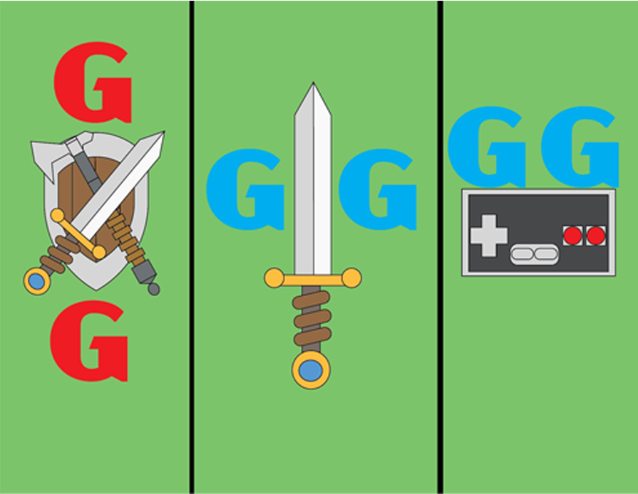

This is my portfolio which will show all of my work, about me and how to contact me. Below shows some examples of my work that I have done in adobe photoshop that I created during my time in school. Also that I created this portfolio as well using my codeing skills that I created during school.
This is a picture I created in abobe using polygons that i used to make a shark. I made this during my time at school and its a shark made out of polygons. I hope enjoy enjoy this preview picture.
I have also created many drawings as well with adobe and other tools as well. This is one of the many which is a magzine that I created in adobe.
This is my logos thgat I created for myself which were all made by me using adobe. These logos show sum of my intrests or things that i thought were cool.
This is my portfolio which will show all of my work, about me and how to contact me.